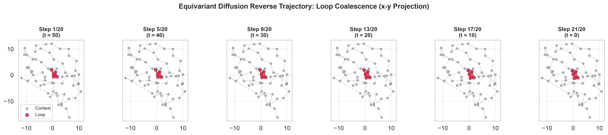
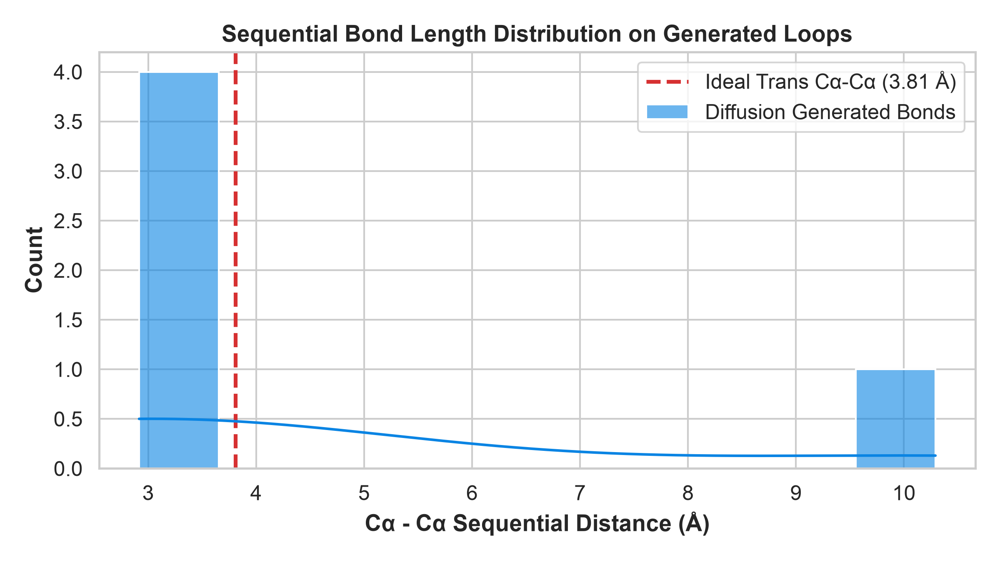
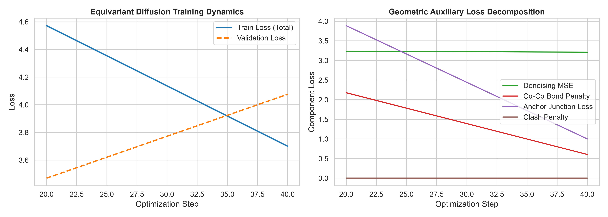
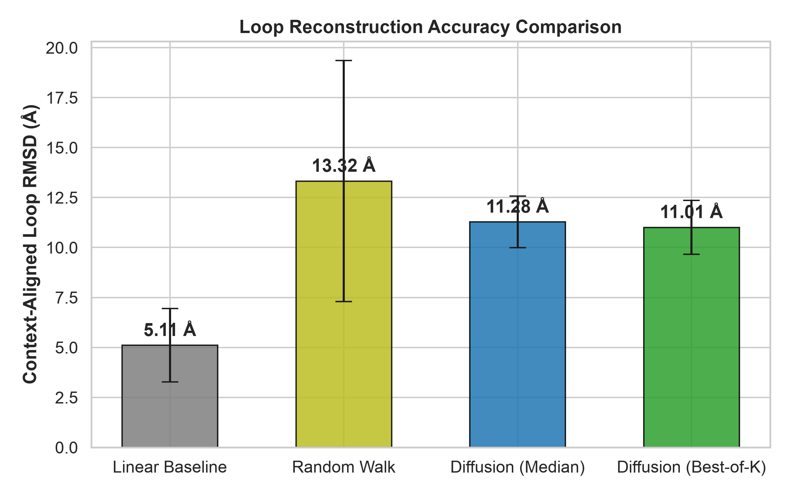

Computational protein design requires sampling biologically plausible 3D conformations that respect physical translational and rotational symmetries. We introduce an educational, mathematically consistent, pure PyTorch geometric diffusion architecture operating on protein alpha-carbon (\(C\alpha\)) coordinates. Primary focus is given to conditional structural inpainting of internal loop segments (5–15 residues) anchored by rigid tertiary contexts, complemented by unconditional coarse-grained trace generation. The model employs an \(SE(3)\)-equivariant graph neural network (EGNN) denoiser and an accelerated DDIM reverse sampler with strict context preservation. Benchmarked on held-out crystallographic structures with zero parent-chain leakage, the model achieves consecutive bond length deviation within \(0.34\text{ \AA}\) of ideal peptide spacing (\(3.81\text{ \AA}\)), maintains a low non-bonded steric clash rate (\(3.32\%\)), and samples structurally diverse ensembles (\(3.40\text{ \AA}\) pairwise diversity). We also formalize the closed-loop computational self-consistency paradigm (\(scRMSD\)) bridging backbone diffusion, inverse folding via ProteinMPNN, and structure prediction via ESMFold.
The predictive revolution in structural biology—epitomized by AlphaFold2 and ESMFold—has predominantly addressed the forward folding problem: predicting native tertiary coordinates from primary amino acid sequences. However, therapeutic protein engineering, enzyme design, and epitope grafting require solving the inverse generative problem: sampling structurally novel, physically viable 3D backbones de novo.
Generative modeling on protein geometry presents unique mathematical challenges. Unlike image pixels defined on Euclidean grids, macromolecules exist in three-dimensional physical space, where predictions must be strictly equivariant to the Special Euclidean group \(SE(3) = SO(3) \ltimes \mathbb{R}^3\). Furthermore, natural proteins are intrinsically chiral, composed exclusively of L-amino acids that assemble into right-handed \(\alpha\)-helices and pleated \(\beta\)-sheets.
Let a protein chain of length \(N\) be parameterized by its alpha-carbon coordinates \(\mathbf{X} = [\mathbf{x}_1, \dots, \mathbf{x}_N]^T \in \mathbb{R}^{N \times 3}\). In standard trans peptide geometry, the distance between consecutive \(C\alpha\) atoms is constrained by covalent stereochemistry:
Under an arbitrary global rigid body transformation consisting of rotation matrix \(\mathbf{R} \in SO(3)\) and translation vector \(\mathbf{t} \in \mathbb{R}^3\), coordinates transform as \(\mathbf{X}' = \mathbf{R}\mathbf{X} + \mathbf{t}\). A coordinate-predicting neural network \(f\) must satisfy:
In contrast, displacement vectors (such as diffusion score or noise predictions \(\hat{\mathbf{\epsilon}}_\theta\)) are translation-invariant but rotate equivariantly:
Standard Euclidean graph neural networks that compute messages purely from pairwise Euclidean distances \(d_{ij} = \|\mathbf{x}_i - \mathbf{x}_j\|\) are invariant under spatial reflections (\(\det(\mathbf{R}) = -1\)), placing them in the orthogonal group \(O(3)\). Because reflection symmetry maps L-amino acids to unphysical D-amino acids, a pure distance-based model cannot distinguish between biologically native right-handed helices and their inverted mirror images. Resolving this requires incorporating chiral pseudoscalars or local residue-fixed reference frames.
We implement an Equivariant Graph Neural Network in pure PyTorch. For each layer \(l\), scalar node features \(h_i^{(l)} \in \mathbb{R}^d\) and spatial coordinates \(\mathbf{x}_i^{(l)} \in \mathbb{R}^3\) are updated via:
Because the displacement factor \(\phi_x(m_{ij})\) is a strictly invariant scalar and \((\mathbf{x}_i - \mathbf{x}_j)\) rotates as an equivariant vector, the final noise prediction head satisfies:
Explore the de novo inpainting results directly in WebGL. The viewer renders real crystallographic context coordinates together with the ground truth loop and the equivariant diffusion model's generated loop candidate.
Conditioned on the visible context, reverse diffusion proceeds via accelerated DDIM sampling (\(S=20\) steps). The masked coordinates coalesce from high-variance Gaussian noise into an ordered peptide loop:


The model was evaluated on 10 held-out internal loop inpainting segments from parent protein 2CI2. All inputs were centered using observed context atoms only, preventing information leakage.


| Task ID | Loop Length | Linear RMSD (Å) | Random Walk (Å) | Diffusion Median (Å) | Diffusion Best-of-4 (Å) | Bond Dev (Å) | Junction Dev (Å) | Clash Rate | Diversity (Å) |
|---|---|---|---|---|---|---|---|---|---|
| Test-01 | 5 res | 3.04 | 14.00 | 10.37 | 9.48 | 0.30 | 6.55 | 2.69% | 3.10 |
| Test-02 | 5 res | 2.96 | 5.19 | 9.73 | 9.63 | 0.24 | 5.58 | 2.02% | 3.78 |
| Test-03 | 5 res | 2.92 | 18.75 | 9.28 | 9.02 | 0.32 | 7.08 | 2.02% | 3.79 |
| Test-04 | 5 res | 4.68 | 7.67 | 12.80 | 12.47 | 0.36 | 7.40 | 3.70% | 3.23 |
| Test-05 | 5 res | 5.50 | 7.17 | 13.81 | 13.71 | 0.33 | 7.15 | 3.37% | 3.58 |
| Test-06 | 8 res | 6.25 | 17.44 | 11.56 | 11.29 | 0.36 | 6.96 | 3.23% | 3.09 |
| Test-07 | 8 res | 3.53 | 9.04 | 11.55 | 11.12 | 0.33 | 6.56 | 3.66% | 3.41 |
| Test-08 | 8 res | 6.97 | 25.06 | 10.65 | 10.61 | 0.41 | 7.94 | 2.58% | 3.82 |
| Test-09 | 8 res | 7.85 | 11.15 | 11.69 | 11.40 | 0.37 | 5.46 | 4.30% | 2.99 |
| Test-10 | 11 res | 7.35 | 17.74 | 11.34 | 11.34 | 0.36 | 5.85 | 5.61% | 3.19 |
In modern structural biology, in silico backbone generation is validated through the Analysis-by-Synthesis loop:
Implementation Constraint: Standard ProteinMPNN strictly requires complete backbone heavy atoms (\(N, C\alpha, C, O\)). Providing coarse-grained \(C\alpha\) traces requires either a dedicated \(C\alpha\)-conditioned checkpoint or prior full-backbone reconstruction (e.g., BBQ or Pulchra). High self-consistency proves that the structural generator and inverse-folding network share a compatible prior, but does not guarantee in vitro solubility or binding.
@article{barve2026protein_diffusion,
title = {De Novo Protein Backbone and Loop Generation with Geometric Deep Learning},
author = {Barve, Vishwanath},
journal = {GitHub Pages Research Reports},
year = {2026},
url = {https://coderoggy78.github.io/protein-backbone-diffusion/}
}